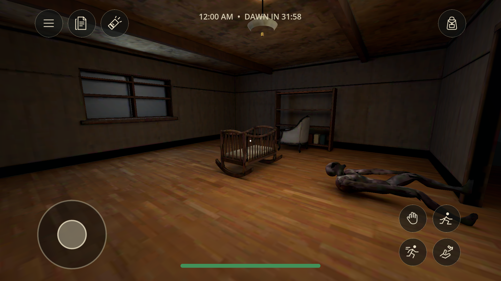
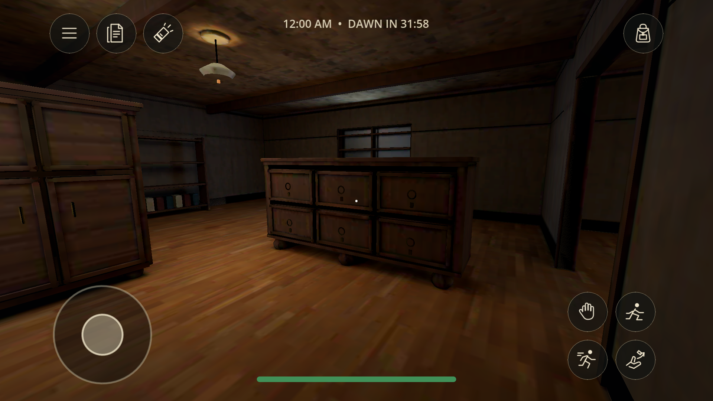
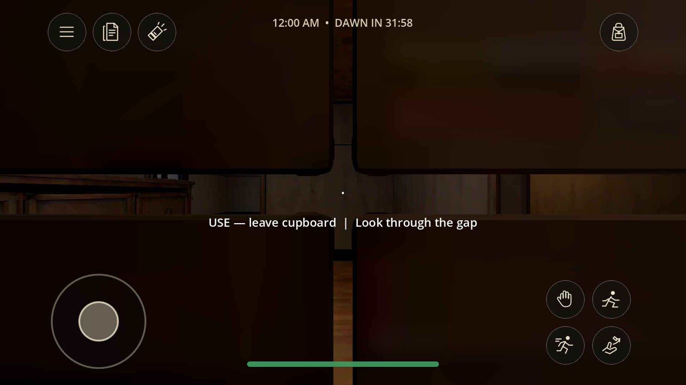
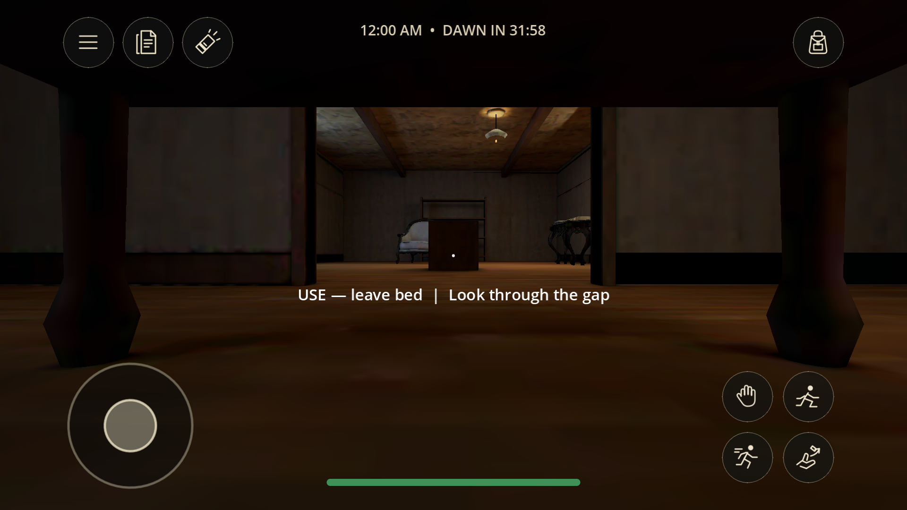
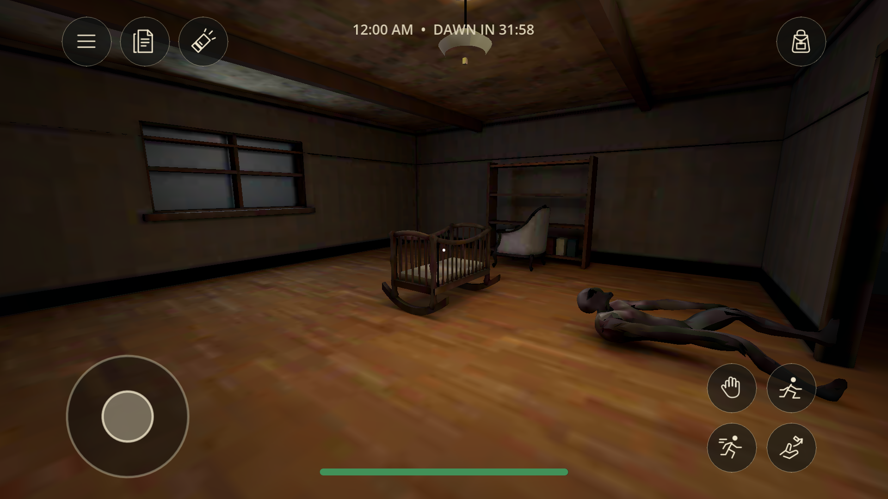

Waiting for Dawn · version 0.8.1 · 18 October 2026
The nursery, inside the game.
Your approved room is now playable: four connected spaces, a modeled cradle, hollow wardrobe, dressers, shelves and aged surfaces. These are captures from the signed Android APK running in the emulator.
Layout approved · textured art approved · runtime review ready

Actual Android gameplay. Baked room lighting, working HUD, shared bag and dawn clock.
Search, hide and find your way out

Two dressers with 12 independently searchable drawers
Inside the wardrobe — actual mesh viewing slit
Under the bed — low camera and room visibility
Lower texture detail — same geometry, smaller atlasWhat was checked
| Check | Result and scope |
|---|
| Progression | CharacterBody walked all 12 keys, opened the garage and boarded. Ghost disabled in that route fixture; separate tests cover capture and endings. |
| Multiplayer | Two/four-process regression passed. Final APK joined Windows, searched a native drawer, synchronized the key and open state, rejected duplication, restarted and handled departure. |
| Visuals | Both texture tiers, wardrobe slit, under-bed camera and drawer views inspected. 83,876 room triangles, 16 runtime meshes. |
| Performance | 15-second desktop and hardware-GPU emulator samples: p50/p95 frame time 16.67 ms at 60 FPS. This does not predict physical-phone performance. |
| Fixes | Door trim collisions, stair threshold snag, room navigation gaps, input before bag initialization and desktop flashlight key. |
Build ready for review
Signed Android APK: WaitingForDawn-0.8.1.apk · 105.0 MB · version code 9. Same package and signing certificate as 0.8.0. All multiplayer peers must update together.
SHA-256 f93f10bbc39de07c06a52314dbce6f3b19690e15b4d0e7f7c2a020888224a5a2
This upgrade covers the nursery wing. Other rooms, the adapted ghost and narrated in-engine opening retain their existing art. Static room lighting is baked. Real-phone graphics, thermal behavior, headphone balance, phone-to-phone Wi-Fi and iOS remain unqualified. SwiftShader emulator rendering failed; the hardware-GPU captures shown here passed.
Asset checks · Runtime report · Editable Blender room
The APK is available locally. GitHub publication waits for your runtime review approval.